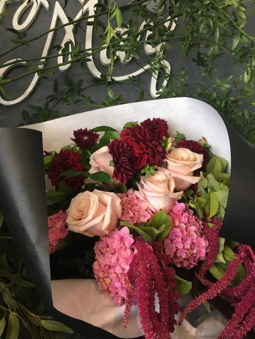
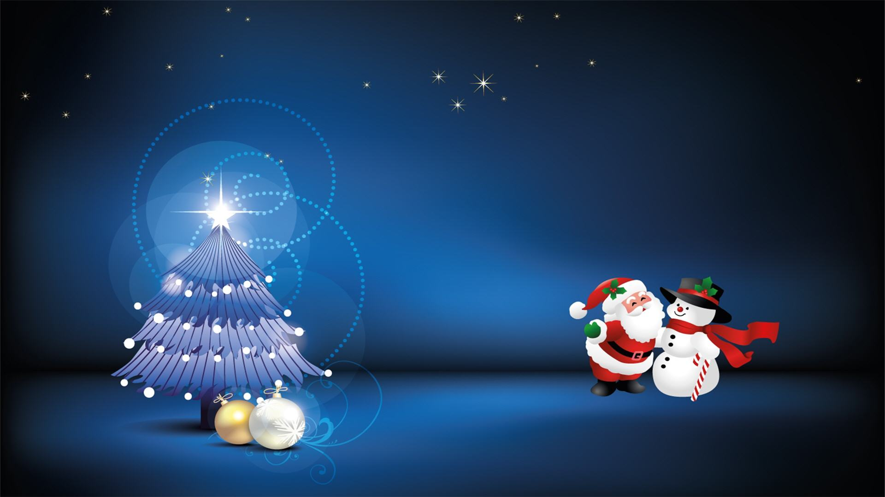

Click on your birth month to know your personality traits.



The month that we are born can say a lot about who we were destined to be when we were born.
Let's explore what your birth month tells about you...?